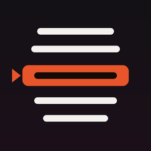
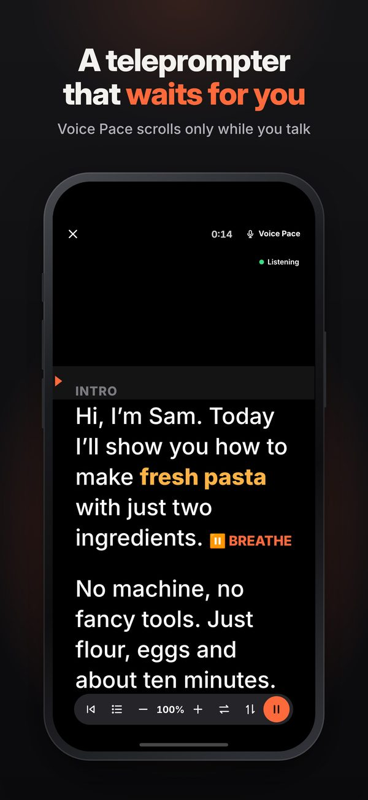
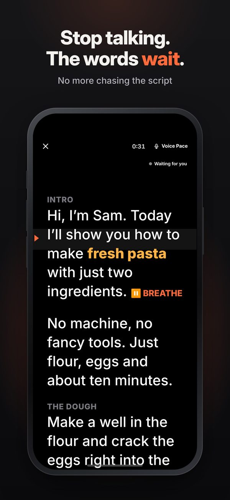
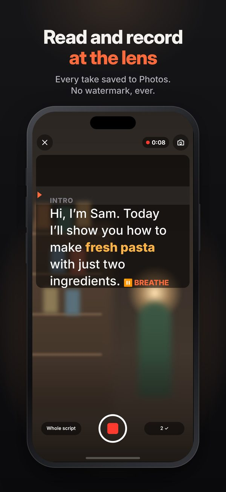
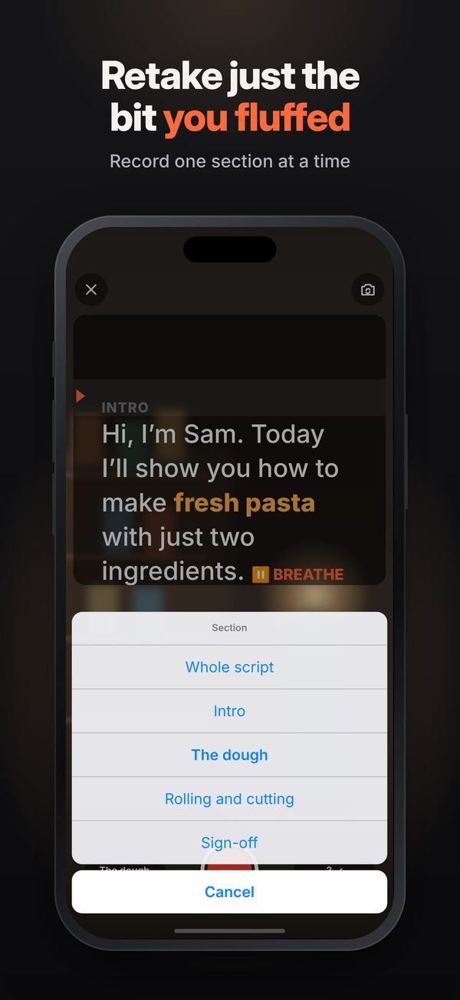
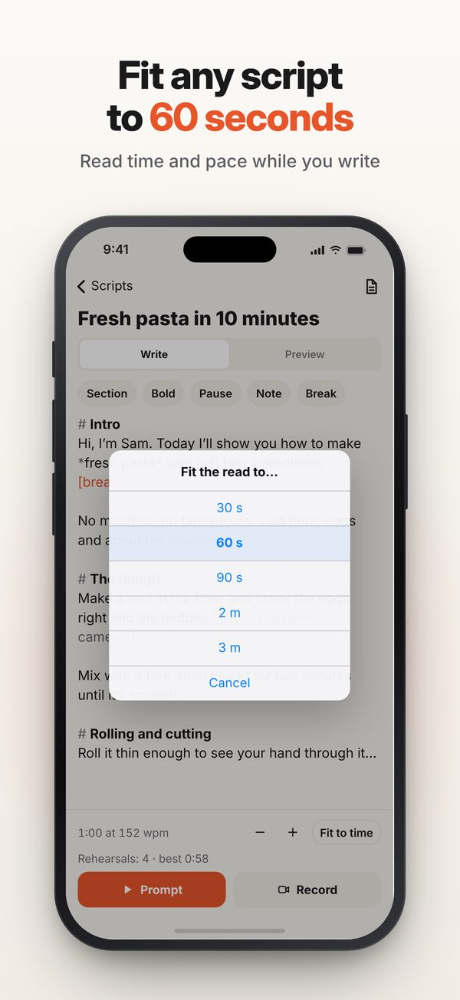
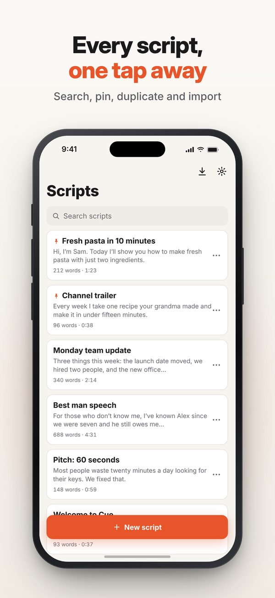
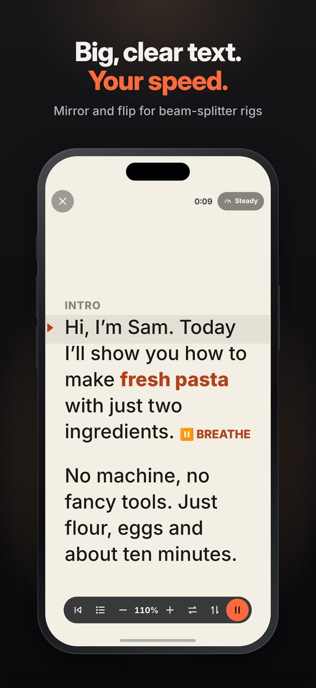
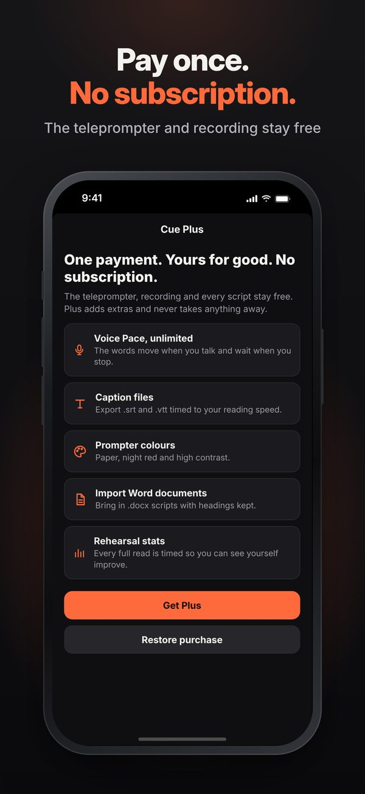

Cue
A teleprompter that waits for you








Why Cue
It waits for you
Voice Pace moves the words only while you talk and stops when you pause, so you never chase the text.
No watermark, no subscription
Record with the script by the lens and save every take to Photos. Plus is one payment, not a yearly bill.
Retake one section
Record your script section by section and redo just the part you fluffed.